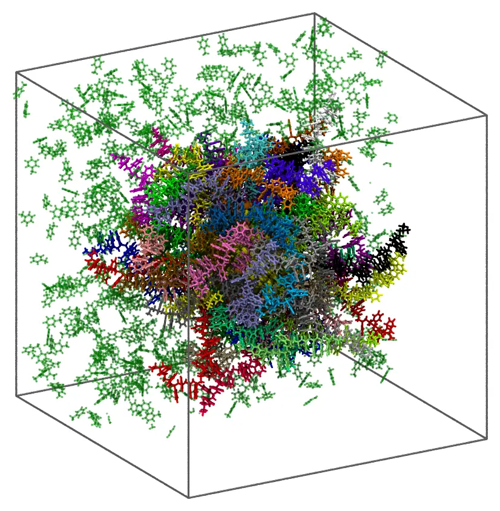
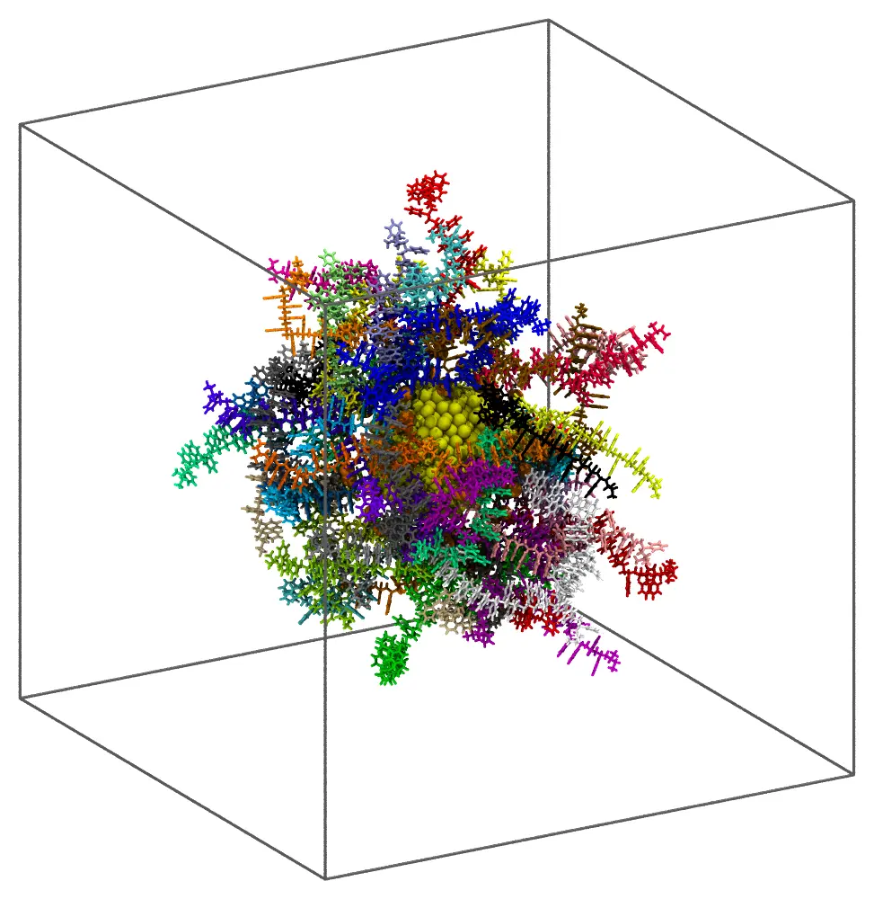
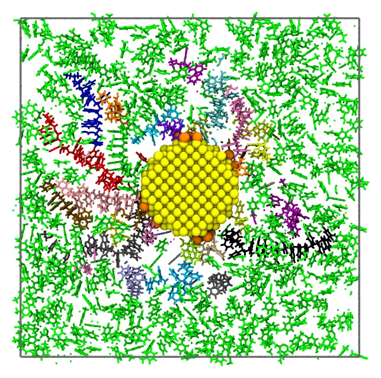

Polymer-capped gold nanoparticle
A gold nanoparticle capped by thiol-terminated polystyrene, in toluene, with all atoms: a gold core, fixed, with 57 chains of polystyrene bound to its surface by their sulfur atoms, and the toluene around them and between the chains. The chains are flexible (Polymers), and too dense near the surface of the core to pack from a random placement: the system is packed at half its density, and compressed around the fixed core (Packing by compression).

The gold core (yellow), the chains, each in a color, and one in every five toluene molecules (green) of the half of the cell behind the particle.
Files: gold.pdb, polystyrene.pdb (the conformations of the chains), toluene.pdb, and the input file gold_polymer.inp.
The structures
- The gold core: the core of the tutorial Gold nanoparticle in toluene, a sphere of 3 nm of the face-centered cubic lattice of gold, with 887 atoms.
- The chains: sec-butyl–[CH₂–CH(C₆H₅)]₂₀–CH₂CH₂–S⁻, polystyrene of 20 units made by anionic polymerization (initiated by sec-butyllithium) and end-capped with ethylene sulfide, a thiol-terminated polystyrene of 2200 g/mol, with 340 atoms.
polystyrene.pdbholds 10 conformations of the chain (one model each), atactic random coils, with radii of gyration between 10.7 and 13.7 Å, and 23 to 44 Å from the sulfur atom to the end of the chain. - The solvent: toluene, as in Gold nanoparticle in toluene.
Generating the conformations is not the job of Packmol, but of the user: they should come from a simulation of the free chain, for example a short molecular dynamics simulation at high temperature. The conformations of polystyrene.pdb were built by build_polystyrene.jl, a proof of concept only: self-avoiding random walks of the backbone in the trans and gauche states, with the phenyl groups on random sides of it, with no force field behind them.
Several conformations, rather than one, also matter for the simulation itself, independently of the packing: the chains start from different conformations, and the results depend less on that of a single one.
The chains as polymers
The atoms of the chain are in the order of its backbone, from the sulfur atom, in groups that are the rigid fragments of the polymer (its monomers): S–CH₂ (4 atoms) and CH₂ (3), then 20 times CH(C₆H₅) (13) and CH₂ (3), and the sec-butyl group (13). Each group starts with its backbone carbon atom (the S–CH₂ group, with the sulfur atom), followed by its substituents. Each group is bonded to the next one by their backbone carbon atoms, and turns about that bond:
bond_distance 1.9 # the bonds: the atoms closer than 1.9 Å
repeat 20
fragment 13 # CH(C6H5)
rotatable 1 1 # the bond of atom 1 to atom 1 of the next group
fragment 3 # CH2
rotatable 1 1
end repeatrotatable 1 1 stands for the links that keep the length of the bond and its angles, at their values in each conformation: the bond, and the bonds of its atoms to their neighbors in their groups (five links: two hydrogen atoms, or a hydrogen atom and the phenyl ring, on each side), and leaves the groups free to turn about the bond: every bond of the backbone rotates (see Polymers). The bonds are computed from the distances (bond_distance), since the file has no CONECT records. A chain is 43 rigid groups, and the pairs of atoms of different groups up to three bonds apart are left out of the distances.
The numbers of molecules
- The chains: short thiol-terminated polymers bind to gold at one to a few chains per nm². Here, 2 chains per nm² of the 28.3 nm² of the surface of the core: 57 chains.
- The solvent: the cell is a cube of 110 Å, periodic, centered at the origin. The toluene fills the cell beyond the layer of sulfur atoms (18 Å from the center), whose volume, given by
free_volume(see Volume estimates), is 1.307 × 10⁶ ų. The chains take 198000 ų of it: 57 × 3480 ų, the volume of a chain at the density of polystyrene (1.05 g/mL). The remaining 1.109 × 10⁶ ų holds 6280 molecules of toluene (0.867 g/mL).
The system has 114,467 atoms.
Capping the nanoparticle
The input file gold_polymer.inp (click to expand)
#
# A gold nanoparticle capped by thiol-terminated polystyrene, in toluene: the gold core
# (fixed), 57 chains of sec-butyl-(styrene)20-CH2CH2-S⁻ bound to its surface by their
# sulfur atoms, and the toluene around them. The chains are flexible (every bond of the
# backbone rotates), and too dense near the surface to pack from a random placement: the
# system is packed at half the density, and compressed (`use_compression`).
#
tolerance 2.0
output gold_polymer.pdb
pbc -55. -55. -55. 55. 55. 55.
use_compression 0.5
# To write only the initial placement of the molecules to the output file,
# without packing them (to check the constraints), uncomment the line below.
# check_initial_placement
# The gold core, fixed at the center of the cell
structure gold.pdb
number 1
center
fixed 0. 0. 0. 0. 0. 0.
end structure
# The chains: 2 per nm² of the surface of the core. The groups of atoms of the chain,
# from the sulfur atom, are its rigid fragments: S-CH2 and CH2, then 20 times CH(C6H5) and
# CH2, and the sec-butyl group. Each turns about the bond between its backbone carbon
# atom (atom 1 of each group; atom 2 of S-CH2) and that of the next group.
structure polystyrene.pdb
number 57
outside sphere 0. 0. 0. 16.
# the sulfur atom, 1 to 2.5 Å above the surface of the core
atoms 1
inside sphere 0. 0. 0. 17.5
end atoms
# the bonds of the chain: the atoms closer than 1.9 Å (the file has no CONECT records)
bond_distance 1.9
fragment 4 # S-CH2
rotatable 2 1 # the bond of atom 2 (C) to atom 1 (C) of the next fragment
fragment 3 # CH2
rotatable 1 1
repeat 20
fragment 13 # CH(C6H5)
rotatable 1 1
fragment 3 # CH2
rotatable 1 1
end repeat
fragment 13 # sec-butyl
end structure
# The toluene: beyond the sulfur atoms, between the chains and around them
structure toluene.pdb
number 6280
outside sphere 0. 0. 0. 18.
end structure
The chains are bound to the core as the ligands of Gold nanoparticle in toluene: the whole chain outside the sphere of 16 Å (the core and 1 Å beyond its atoms), and its sulfur atom (atoms 1) inside the sphere of 17.5 Å, in a shell from 1 to 2.5 Å above the surface of the core. Nothing orients the chains: they are coils, which the crowding near the surface stretches outwards. The toluene is kept beyond the sulfur atoms (outside the sphere of 18 Å), and fills the rest of the cell, between the chains too.
Packed from a random placement, the system does not converge: near the surface of the core, the chains jam (in 500 loops, with the chains rigid and then flexible, the function stalls at about 25, with the chains overlapping each other). With use_compression 0.5, the system is first packed at half its density: the constraints and the cell are expanded by 2^(1/3), and the system packed there (as rigid molecules, then with the chains released). The gold core is fixed, and is scaled with the geometry (the coordinates of its atoms and their radii): the shell of the sulfur atoms, placed relative to the core, stays on its surface, expanded and compressed with it, in steps, back to the geometry of the input file.
Check the initial placement first
Uncomment the check_initial_placement line of the input file, and run it (see Checking the initial placement): the initial placement is that of the expanded geometry, with the chains as rigid molecules, before any packing:

The initial placement, in the expanded cell: the gold core and the chains (the toluene is not shown).
When it looks like this, comment the line again, and run the packing.
Packing
packmol gold_polymer.inpThe packing at half the density takes about 2 minutes, and the compression about 60 steps, in 5 to 6 minutes, with 14 threads:
Compression step 1: density 58.32% of the target, not converged (9.9 s)
...
Compression step 58: density 100.00% of the target, converged (7.7 s)
Compressed to the density of the input in 58 steps (330.4 s).All the sulfur atoms end 16 to 17.5 Å from the center, and the bonds of the chains are kept to 0.08 Å. The ends of the chains are 18 to 56 Å from the center (42 Å on average): the chains stretch out from the surface, a brush (with a few folded back).

A slab of 10 Å through the middle of the cell: the gold core, the sulfur atoms (orange) on its surface, the chains, and the toluene between them and around them.
Julia script
using Packmolorigin = [0., 0., 0.]gold = structure_type("gold.pdb"; number = 1, center = :geometric, fixed = (origin, origin),)# The groups of the chain, each turning about the bond of its# backbone carbon atom (atom 1, or atom 2 of S-CH2) to that of the nextfragments = [ fragment(4; rotatable = [(2, 1)]), # S-CH2 fragment(3; rotatable = [(1, 1)]), # CH2 20 => [ fragment(13; rotatable = [(1, 1)]), # CH(C6H5) fragment(3; rotatable = [(1, 1)]), # CH2 ], fragment(13), # sec-butyl]chains = flexible_structure_type("polystyrene.pdb"; number = 57, fragments, bond_distance = 1.9, # the bonds: the atoms closer than 1.9 Å constraints = [OutsideSphere(origin, 16.)], atom_constraints = [[1] => InsideSphere(origin, 17.5)], # the sulfur atom)toluene = structure_type("toluene.pdb"; number = 6280, constraints = [OutsideSphere(origin, 18.)],)system = PackmolSystem([gold, chains, toluene]; output = "gold_polymer.pdb", tolerance = 2.0, unitcell = [110. 0. 0.; 0. 110. 0.; 0. 0. 110.], # centered at the origin use_compression = 0.5, # check_initial_placement = true,)packmol(system)